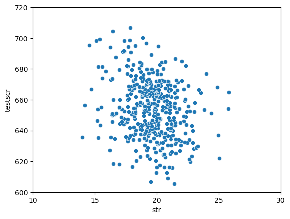
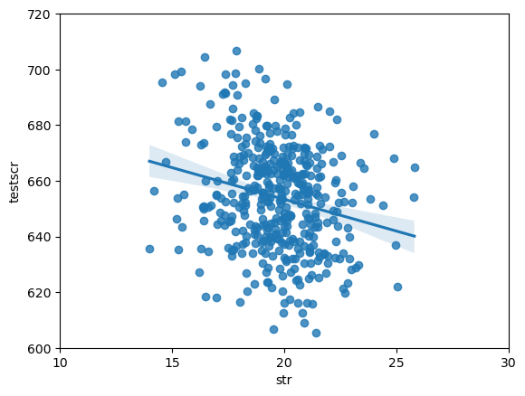

4. Linear Regression with One Regressor#
import pandas as pd
import numpy as np
import statsmodels.api as sm
import statsmodels.formula.api as smf
import matplotlib.pyplot as plt
import seaborn as sns
import math
df = pd.read_excel("data/replication/Replication Data/caschool.xlsx")
df.head()
F:\miniconda3\envs\py\Lib\site-packages\openpyxl\worksheet\_reader.py:329: UserWarning: Unknown extension is not supported and will be removed
warn(msg)
| Observation Number | dist_cod | county | district | gr_span | enrl_tot | teachers | calw_pct | meal_pct | computer | testscr | comp_stu | expn_stu | str | avginc | el_pct | read_scr | math_scr | |
|---|---|---|---|---|---|---|---|---|---|---|---|---|---|---|---|---|---|---|
| 0 | 1 | 75119 | Alameda | Sunol Glen Unified | KK-08 | 195 | 10.900000 | 0.510200 | 2.040800 | 67 | 690.799988 | 0.343590 | 6384.911133 | 17.889910 | 22.690001 | 0.000000 | 691.599976 | 690.000000 |
| 1 | 2 | 61499 | Butte | Manzanita Elementary | KK-08 | 240 | 11.150000 | 15.416700 | 47.916698 | 101 | 661.200012 | 0.420833 | 5099.380859 | 21.524664 | 9.824000 | 4.583333 | 660.500000 | 661.900024 |
| 2 | 3 | 61549 | Butte | Thermalito Union Elementary | KK-08 | 1550 | 82.900002 | 55.032299 | 76.322601 | 169 | 643.599976 | 0.109032 | 5501.954590 | 18.697226 | 8.978000 | 30.000002 | 636.299988 | 650.900024 |
| 3 | 4 | 61457 | Butte | Golden Feather Union Elementary | KK-08 | 243 | 14.000000 | 36.475399 | 77.049202 | 85 | 647.700012 | 0.349794 | 7101.831055 | 17.357143 | 8.978000 | 0.000000 | 651.900024 | 643.500000 |
| 4 | 5 | 61523 | Butte | Palermo Union Elementary | KK-08 | 1335 | 71.500000 | 33.108601 | 78.427002 | 171 | 640.849976 | 0.128090 | 5235.987793 | 18.671329 | 9.080333 | 13.857677 | 641.799988 | 639.900024 |
df['testscr'].mean()
np.float64(654.156548055013)
df['testscr'].std()
np.float64(19.053347643618785)
df['str'].mean()
np.float64(19.64042526199704)
df['str'].std()
np.float64(1.8918117872336757)
sns.scatterplot(x='str', y='testscr', data=df)
plt.xticks(range(10, 31, 5))
plt.yticks(range(600, 721, 20))
plt.show()

df['str'].corr(df['testscr'])
np.float64(-0.22636275108686532)
There is a weak negatice relationship between the two variables
\[
TestScore = \beta_o + \beta_1 \times STR
\]
sns.regplot(x='str', y='testscr', data=df)
plt.xticks(range(10, 31, 5))
plt.yticks(range(600, 721, 20))
plt.show()

model = smf.ols('testscr ~ str', data=df).fit()
print(model.summary())
OLS Regression Results
==============================================================================
Dep. Variable: testscr R-squared: 0.051
Model: OLS Adj. R-squared: 0.049
Method: Least Squares F-statistic: 22.58
Date: Wed, 10 Jul 2024 Prob (F-statistic): 2.78e-06
Time: 14:36:21 Log-Likelihood: -1822.2
No. Observations: 420 AIC: 3648.
Df Residuals: 418 BIC: 3657.
Df Model: 1
Covariance Type: nonrobust
==============================================================================
coef std err t P>|t| [0.025 0.975]
------------------------------------------------------------------------------
Intercept 698.9330 9.467 73.825 0.000 680.323 717.543
str -2.2798 0.480 -4.751 0.000 -3.223 -1.337
==============================================================================
Omnibus: 5.390 Durbin-Watson: 0.129
Prob(Omnibus): 0.068 Jarque-Bera (JB): 3.589
Skew: -0.012 Prob(JB): 0.166
Kurtosis: 2.548 Cond. No. 207.
==============================================================================
Notes:
[1] Standard Errors assume that the covariance matrix of the errors is correctly specified.
RSS = np.sum(model.resid**2)
RSS
np.float64(144315.4836027621)
anova_table = sm.stats.anova_lm(model)
anova_table
| df | sum_sq | mean_sq | F | PR(>F) | |
|---|---|---|---|---|---|
| str | 1.0 | 7794.110041 | 7794.110041 | 22.575111 | 0.000003 |
| Residual | 418.0 | 144315.483603 | 345.252353 | NaN | NaN |
dir(model)
['HC0_se',
'HC1_se',
'HC2_se',
'HC3_se',
'_HCCM',
'__class__',
'__delattr__',
'__dict__',
'__dir__',
'__doc__',
'__eq__',
'__format__',
'__ge__',
'__getattribute__',
'__getstate__',
'__gt__',
'__hash__',
'__init__',
'__init_subclass__',
'__le__',
'__lt__',
'__module__',
'__ne__',
'__new__',
'__reduce__',
'__reduce_ex__',
'__repr__',
'__setattr__',
'__sizeof__',
'__str__',
'__subclasshook__',
'__weakref__',
'_abat_diagonal',
'_cache',
'_data_attr',
'_data_in_cache',
'_get_robustcov_results',
'_get_wald_nonlinear',
'_is_nested',
'_transform_predict_exog',
'_use_t',
'_wexog_singular_values',
'aic',
'bic',
'bse',
'centered_tss',
'compare_f_test',
'compare_lm_test',
'compare_lr_test',
'condition_number',
'conf_int',
'conf_int_el',
'cov_HC0',
'cov_HC1',
'cov_HC2',
'cov_HC3',
'cov_kwds',
'cov_params',
'cov_type',
'df_model',
'df_resid',
'diagn',
'eigenvals',
'el_test',
'ess',
'f_pvalue',
'f_test',
'fittedvalues',
'fvalue',
'get_influence',
'get_prediction',
'get_robustcov_results',
'info_criteria',
'initialize',
'k_constant',
'llf',
'load',
'model',
'mse_model',
'mse_resid',
'mse_total',
'nobs',
'normalized_cov_params',
'outlier_test',
'params',
'predict',
'pvalues',
'remove_data',
'resid',
'resid_pearson',
'rsquared',
'rsquared_adj',
'save',
'scale',
'ssr',
'summary',
'summary2',
't_test',
't_test_pairwise',
'tvalues',
'uncentered_tss',
'use_t',
'wald_test',
'wald_test_terms',
'wresid']
model.ssr
np.float64(144315.4836027621)
SER = math.sqrt(model.ssr/(model.nobs-2))
SER
18.58096749678702
str_value = 22
model.predict({'str': str_value})
0 648.77717
dtype: float64
Prediction of test score based on student-teacher-ratio = 22 is
prediction \(\pm \) SER
= 649 \(\pm\) 18.6
\(R^2\) of 0.051 means that the regressor STR explains 5.1% of the variance of the dependent variable
\(SER\) of 18.6 means that there is a large spread of the scatterplot around the regression line as measured in points on the test. This large spread means that predictions of test scores made using only the student– teacher ratio for that district will often be wrong by a large amount.
Empirical Exercises#
df2 = pd.read_excel("data/exercises/Growth (EE 4.1, 5.2, 6.2)/Growth.xlsx")
df2.head()
F:\miniconda3\envs\py\Lib\site-packages\openpyxl\worksheet\_reader.py:329: UserWarning: Unknown extension is not supported and will be removed
warn(msg)
| country_name | growth | oil | rgdp60 | tradeshare | yearsschool | rev_coups | assasinations | |
|---|---|---|---|---|---|---|---|---|
| 0 | India | 1.915168 | 0 | 765.999817 | 0.140502 | 1.45 | 0.133333 | 0.866667 |
| 1 | Argentina | 0.617645 | 0 | 4462.001465 | 0.156623 | 4.99 | 0.933333 | 1.933333 |
| 2 | Japan | 4.304759 | 0 | 2953.999512 | 0.157703 | 6.71 | 0.000000 | 0.200000 |
| 3 | Brazil | 2.930097 | 0 | 1783.999878 | 0.160405 | 2.89 | 0.100000 | 0.100000 |
| 4 | United States | 1.712265 | 0 | 9895.003906 | 0.160815 | 8.66 | 0.000000 | 0.433333 |
df3 = pd.read_csv("data/exercises/Earnings_and_Height.csv")
df3.head()
| sex | age | mrd | educ | cworker | region | race | earnings | height | weight | occupation | |
|---|---|---|---|---|---|---|---|---|---|---|---|
| 0 | 0 | 48 | 1 | 13 | 1 | 3 | 1 | 84054.75000 | 65 | 133 | 1 |
| 1 | 0 | 41 | 6 | 12 | 1 | 2 | 1 | 14021.39453 | 65 | 155 | 1 |
| 2 | 0 | 26 | 1 | 16 | 1 | 1 | 1 | 84054.75000 | 60 | 108 | 1 |
| 3 | 0 | 37 | 1 | 16 | 1 | 2 | 1 | 84054.75000 | 67 | 150 | 1 |
| 4 | 0 | 35 | 6 | 16 | 1 | 1 | 1 | 28560.38672 | 68 | 180 | 1 |
df4 = pd.read_csv("data/additional/cps12.csv")
df4.head()
| year | ahe | bachelor | female | age | |
|---|---|---|---|---|---|
| 0 | 2012 | 19.230770 | 0 | 0 | 30 |
| 1 | 2012 | 17.548077 | 0 | 0 | 29 |
| 2 | 2012 | 8.547009 | 0 | 0 | 27 |
| 3 | 2012 | 16.826923 | 0 | 1 | 25 |
| 4 | 2012 | 16.346153 | 1 | 1 | 27 |
df5 = pd.read_excel("data/additional/TeachingRatings.xlsx")
df5.head()
| minority | age | female | onecredit | beauty | course_eval | intro | nnenglish | |
|---|---|---|---|---|---|---|---|---|
| 0 | 1 | 36 | 1 | 0 | 0.289916 | 4.3 | 0 | 0 |
| 1 | 0 | 59 | 0 | 0 | -0.737732 | 4.5 | 0 | 0 |
| 2 | 0 | 51 | 0 | 0 | -0.571984 | 3.7 | 0 | 0 |
| 3 | 0 | 40 | 1 | 0 | -0.677963 | 4.3 | 0 | 0 |
| 4 | 0 | 31 | 1 | 0 | 1.509794 | 4.4 | 0 | 0 |
df6 = pd.read_excel("data/additional/CollegeDistance.xlsx")
df6.head()
| female | black | hispanic | bytest | dadcoll | momcoll | ownhome | urban | cue80 | stwmfg80 | dist | tuition | ed | incomehi | |
|---|---|---|---|---|---|---|---|---|---|---|---|---|---|---|
| 0 | 0 | 0 | 0 | 39.15 | 1 | 0 | 1 | 1 | 6.2 | 8.09 | 0.2 | 0.88915 | 12 | 1 |
| 1 | 1 | 0 | 0 | 48.87 | 0 | 0 | 1 | 1 | 6.2 | 8.09 | 0.2 | 0.88915 | 12 | 0 |
| 2 | 0 | 0 | 0 | 48.74 | 0 | 0 | 1 | 1 | 6.2 | 8.09 | 0.2 | 0.88915 | 12 | 0 |
| 3 | 0 | 1 | 0 | 40.40 | 0 | 0 | 1 | 1 | 6.2 | 8.09 | 0.2 | 0.88915 | 12 | 0 |
| 4 | 1 | 0 | 0 | 40.48 | 0 | 0 | 0 | 1 | 5.6 | 8.09 | 0.4 | 0.88915 | 13 | 0 |